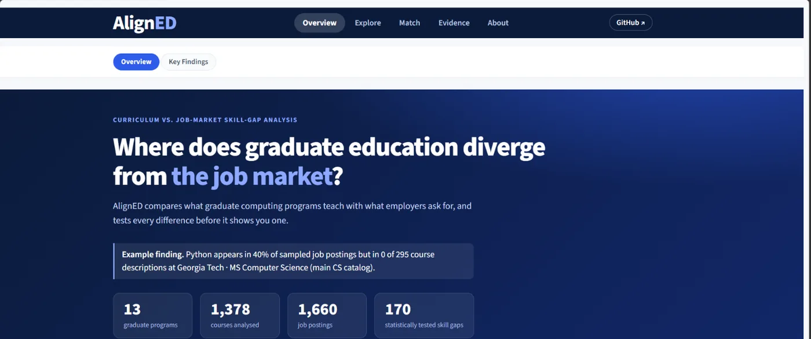
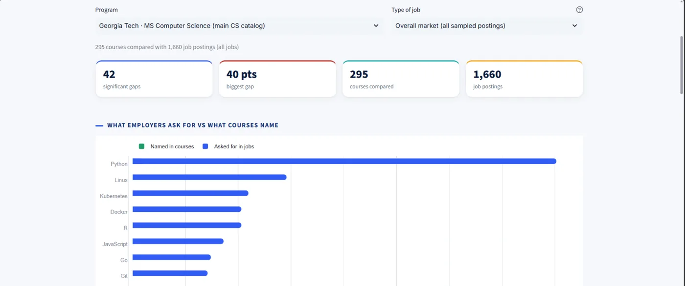
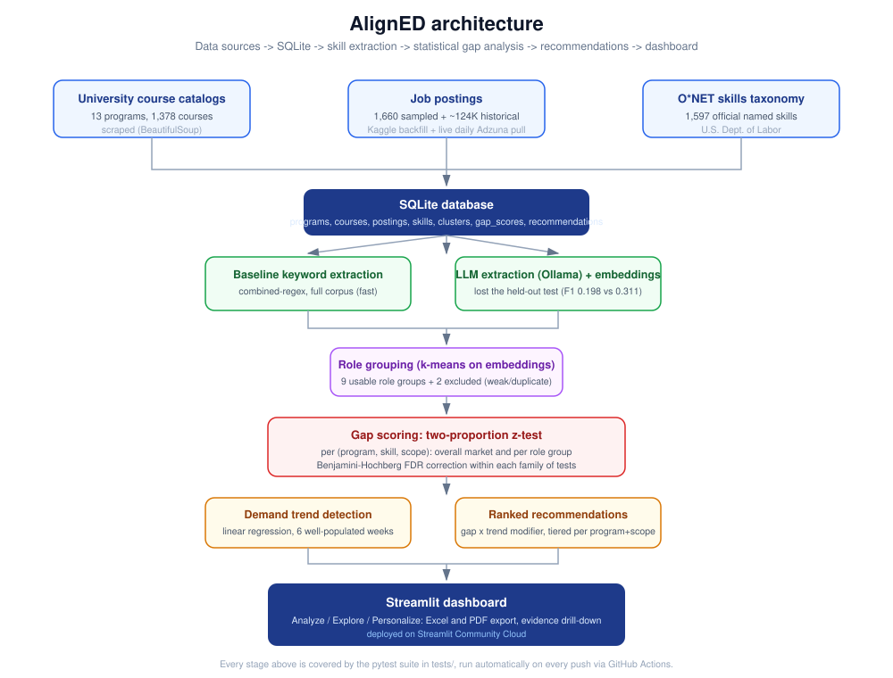

Overview: the headline finding
Skill gaps by program
ArchitectureQuestion
Do graduate computing programs teach what employers ask for? "Industry-ready" is usually claimed, not measured, so I built a system that measures it and reports how far the measurement can be trusted.
Example finding: Python appears in 40% of sampled job postings but in none of the 295 course descriptions in one department's catalog.
What I built
- Matched 1,378 courses from 13 programs against 1,660 job postings on O*NET skills, and tested 170 skill gaps with z-tests and Fisher's exact test under FDR control.
- A validated, idempotent daily ingestion pipeline (retries, raw snapshots, de-duplication, audit tables), orchestrated with Prefect and run on GitHub Actions.
- A versioned, authenticated, rate-limited REST API (FastAPI) with OpenAPI docs and Docker packaging, covered by 300+ automated tests gated in CI.
- A public Streamlit app with 724 ranked recommendations.
Decision I can defend
I held out 50 fresh items, labeled before either method ran. The keyword baseline beat the LLM (F1 0.311 vs 0.198), so I shipped it. The chart below shows how the result flipped.
Limits I report
Fifty items is a small sample. No demand trend survived multiple-comparison correction (0 of 67 skills), so the trends page labels them early hints.
Interactive: the result flipped
Skill-extraction F1 score. Higher is better.
On the 104 items I used while building, the LLM method led (F1 0.426 vs 0.364). Its similarity cutoff was tuned on these same items, so this result is optimistic.